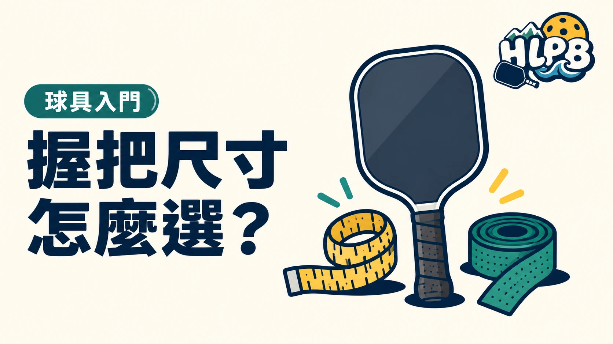

握把尺寸通常說的是周長，握柄長度則是另一個規格。先把兩者分清楚，再比較自己握起來是否合適。
| 規格 | 在看什麼 | 常見標示的換算 |
|---|---|---|
| 握把周長 | 握把粗細 | 4 吋約 10.16 公分，4¼ 吋約 10.80 公分 |
| 握柄長度 | 能握住的柄部長度 | 以各型號規格為準 |
| 球拍總長 | 整支球拍長度 | 包含拍面與握柄，不能代替握柄長度 |
以上周長數字是尺寸換算，不是依身高分配球拍的公式。
試握時看什麼？
確認可以自然握住，不需要一直緊抓才能穩定。習慣雙手反拍的人，也要檢查雙手空間，不能只看到球拍總長較長就認定握柄夠用。
握把布會改變尺寸
| 名稱 | 購買前確認 |
|---|---|
| 替換握把布 | 是否用來替換原本的底層握把 |
| 外層握把布 | 是否是包在原握把外，會再增加厚度 |
| 吸汗或黏性取向 | 實際流汗後的觸感是否合適 |
握把布不是纏越多越好。 原本尺寸已合適，增加外層就要重新檢查粗細。調整前先問清楚產品用途，避免把外層握把布和替換握把布當成同一種用品。
尺寸資料、舒適感與打法是不同問題。產品標示能幫助篩選，最後仍要實際握持確認。
來源：Selkirk 握把指南 官方資料 ↗；握把布整理為 HLPB 編輯說明，實際使用依產品用途。資料核對：2026/10/13。
最後查證：2026-10-13｜資料來源：HLPB 編輯整理與正文所列官方資料
返回文章列表